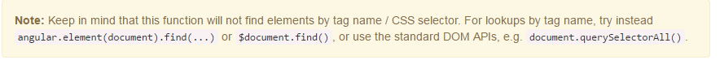

一直在Angular中混用jQuery，用来操作DOM，因为它(wo)很(tai)方(nian)便(qing)，最近将jQuery从项目中移除了，将所有涉及到jQuery操作换为用angular提供的api或原生js来实现……虽然jQuery压缩过才100kb左右。
1.Angular内置jqLite，封装了部分操作DOM的api，使用angular.element(ele)相当于jQuery中的$,具体使用见官方文档。
因此我们所使用的jQuery选择器，例如：
可以换成：
1
| angular.element(document.querySelector("#empl-name"));
|
使用document.querySelector 的原因官方文档中有说明:

2.替换掉依赖jQuery的插件。
例如，使用的jQuery的tooltip组件插件，现在换成ui bootstrap中的tooltip组件。
原来引入jQuery tooltip插件代码后，封装成指令：
1
2
3
4
5
6
7
8
9
10
11
12
13
14
15
16
17
18
19
20
21
22
23
24
| "use strict";
var moduleName="kass.widget.tooltip";
angular.module(moduleName,[])
.directive("tooltip",[function(){
return{
restrict : "A",
link : function(scope, element, attrs){
var opts ={
formatter: function(scope){
return scope.$target.attr("tooltip");
},
direction : attrs.tooltipDirection ? attrs.tooltipDirection : "bottom"
};
element.tipper(opts);
element.one("$destroy",function(){
element.tipper("destroy");
});
}
}
}]);
module.exports=moduleName;
|
引入ui bootstrap 中的tooptip部分：
1
2
3
4
5
6
7
8
9
10
11
12
13
14
15
16
| require("./position");
require("./stackedMap");
angular.module('ui.bootstrap.tooltip', ['ui.bootstrap.position', 'ui.bootstrap.stackedMap',"uib/template/tooltip/tooltip-html-popup.html","uib/template/tooltip/tooltip-popup.html","uib/template/tooltip/tooltip-template-popup.html"])
.provider('$uibTooltip', function(){........})
......
.directive('uibTooltipTemplatePopup', function() {
return {
restrict: 'A',
scope: { contentExp: '&', originScope: '&' },
templateUrl: 'uib/template/tooltip/tooltip-template-popup.html'
};
});
......
angular.module("uib/template/tooltip/tooltip-popup.html", []).run(......);
......
angular.module('ui.bootstrap.tooltip').run(......);
|
发现github上的一个封装angular tooltip的项目,使用方便有demo,⊙o⊙……
3.jQuery的动画部分。
一些动画可以直接使用css的animation、transition属性进行设置，还可以使用angular提供的动画。
例如jQuery一个简单的改变位置动画，需要在动画完成后移除这个指令组件：
1
2
3
4
5
| $(".side-modal").animate({right:'-100%'},300,function(){
$scope.$apply(function(){
$scope.onRemove();
});
});
|
使用angular的动画，要引入angular-animate.js文件，注入ngAnimate：
1
2
3
4
5
6
7
8
9
10
11
12
13
14
15
16
17
18
19
20
21
22
23
24
| "use strict";
require("./angular-animte-min");
var moduleName = "animateTest";
angular.module(moduleName,["ngAnimate"])
.directive(myTest,["$animate",function("$animate"){
return{
restrict : "AE",
replace : false,
scope : {
onRemove : "&"
},
template : require("html!../template/to/mytest.html"),
controller : ["$scope",function($scope){
......
var slideBox = angular.element(document.querySelector(".side-modal"));
$animate.addClass(slideBox,'set-right',function(){
$scope.onRemove();
});
......
}],
link:function(scope,element,attrs){......}
}
}]);
module.exports=moduleName;
|
4.其他部分可以参考github上的一个项目：You Don’t Need jQuery。
April Fool’s Day ….⊙o⊙….